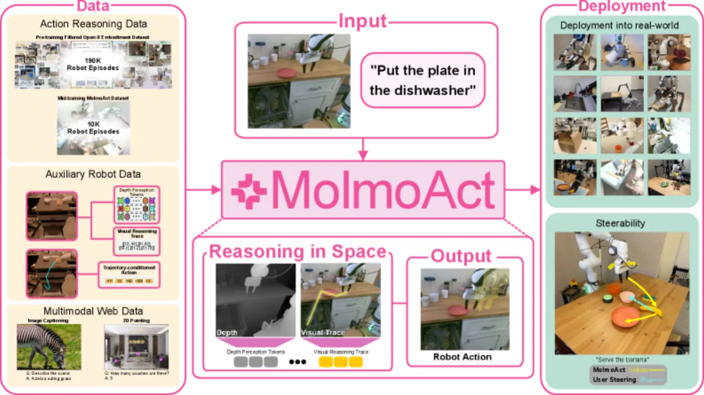
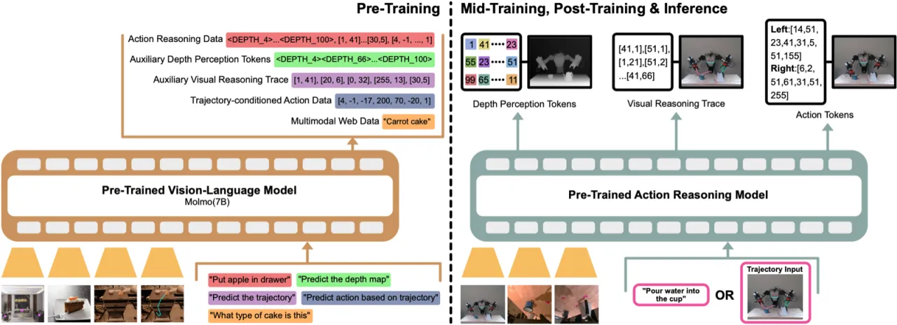
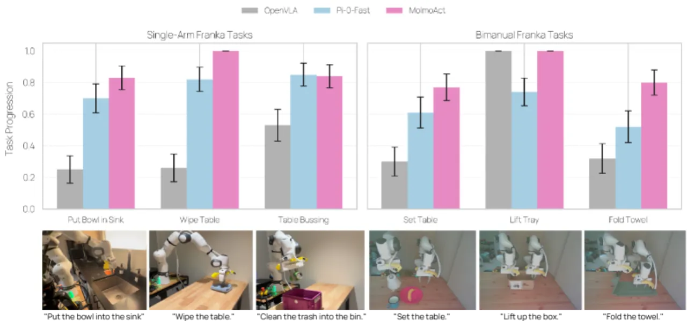
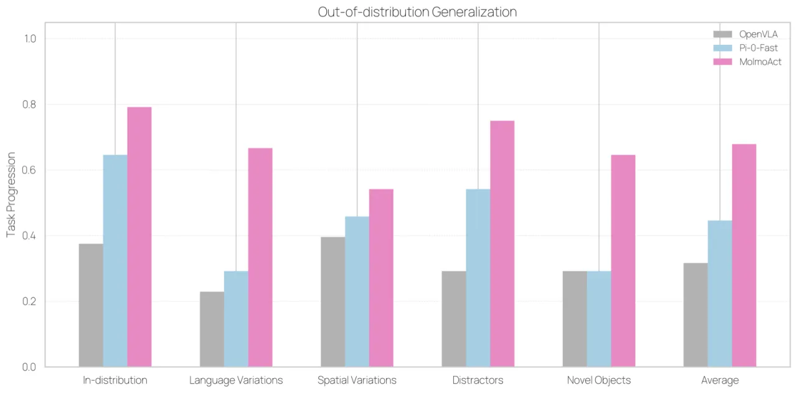
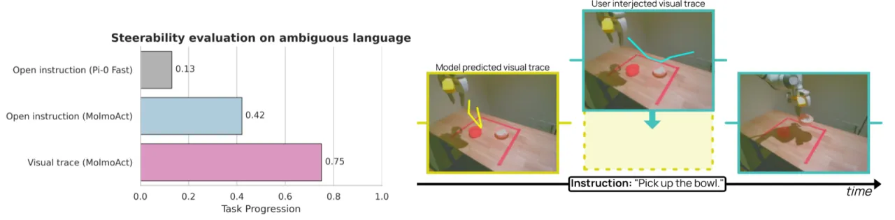

MolmoAct 提出了一类名为 Action Reasoning Model (ARM) 的机器人基础模型，通过三阶段结构化流水线——深度感知 token 编码、中层空间轨迹规划、低层精准动作预测——在不牺牲端到端可训练性的前提下，赋予机器人「在空间中推理」的能力。模型在零样本 SimplerEnv 测试中达到 70.5% 成功率，并在真实场景操作中全面超越 π₀-FAST。
当前大多数视觉-语言-动作（VLA）模型将感知与指令直接映射到控制信号，缺乏中间推理步骤，导致适应性、泛化性和语义可解释性受限。论文指出，大语言模型从 chain-of-thought 推理中获益匪浅，而机器人学领域却鲜有类似结构。
"Reasoning is central to purposeful action, yet most robotic foundation models map perception and instructions directly to control, which limits adaptability, generalization, and semantic grounding."
作者认为，机器人的推理应当「根植于空间理解」而非纯语言推理——轨迹、深度信息与物理空间才是机器人决策的真正基础。MolmoAct 的核心贡献是将这一理念落地：在自回归生成的同一 token 序列中，依次推断深度、轨迹与动作，实现可解释、可干预的行为。

MolmoAct 采用自回归 Transformer 架构，将深度估计、轨迹生成与动作预测统一在同一 token 序列中，按顺序条件化：深度 token 由图像与指令确定，轨迹 trace 以深度为条件，动作 token 则同时以深度与轨迹为条件。

利用预训练深度估计器 Depth Anything V2 从 RGB 图像提取深度图，再经过 VQVAE（codebook 维度 128，序列长度 100 tokens）离散化编码。100 个深度 token 被插入到文本 token 序列中，令模型获得「3D understanding, which is critical for robotic manipulation」。VQVAE 在 1000 万张桌面操作深度图上训练，分辨率 320×320。
模型预测 end-effector 在图像平面上的未来轨迹，表示为折线（1–5 个关键点），以像素坐标直接叠加在观测图像上。与纯语言规划不同，trajectory trace 是 2D 空间中「future motion of the end effector」的直接表达，可被人类实时查看和编辑，实现行为的可干预性（steerability）。
机器人动作以每维 256 个均匀宽度 bin 离散化。与随机分配词汇 token 不同，作者将 Qwen2 tokenizer 最后 256 个 token（字节级 BPE 符号）单调递增地分配给各 bin，从而保留动作的序数结构——相邻 bin 对应相邻符号——为优化提供「smoother starting point」。此外，采用 similarity-preserving initialization 初始化动作 token 嵌入，将预训练效率提升超 5×（相比 GR00T N1.5 的 50,000 GPU 小时，MolmoAct 仅需 9,728 小时）。
预训练（256 × H100，100k 步，batch 512）在网络多模态数据与推理数据上进行，建立空间理解与语言理解的基础；中训练（128 × H100，50k 步，batch 128）在 MolmoAct Dataset（10,689 条 Franka 单臂轨迹，93 类家庭任务，平均 112 timesteps/条）上强化操作能力；后训练在目标任务数据上微调。
评估覆盖仿真基准（SimplerEnv、LIBERO）和真实世界单臂/双臂操作任务，基线包括 π₀-FAST、GR00T N1.5、SpatialVLA、ThinkAct 等主流 VLA 模型。
| 模型 | Visual Matching Avg | Variant Aggregation Avg |
|---|---|---|
| MolmoAct-7B-D（zero-shot） | 70.5% | 59.3% |
| MolmoAct-7B-D（fine-tuned） | 71.6% | 72.1% |
| π₀-FAST（fine-tuned） | 61.9% | 59.0% |
| SpatialVLA | 70.0% | — |
| GR00T N1.5 | 52.4% | 43.7% |
MolmoAct 零样本 Visual Matching 超越所有基线，fine-tuned Variant Aggregation 超越 RT-2-X 7.8%。
| 模型 | Spatial | Object | Goal | Long-horizon | 平均 |
|---|---|---|---|---|---|
| MolmoAct-7B-D | 87.0% | 95.4% | 87.6% | 77.2% | 86.6% |
| π₀-FAST | 96.4% | 96.8% | 88.6% | 60.2% | 85.5% |
| ThinkAct | 88.3% | 91.4% | 87.1% | 70.9% | 84.4% |
MolmoAct 在长视野任务（LIBERO-Long）上超越 ThinkAct 6.3 个百分点，体现了空间推理在复杂序列操作中的优势。值得注意：π₀-FAST 在 Spatial 和 Object 子任务上仍优于 MolmoAct。



人类评估中，MolmoAct 在指令跟随 Elo 评分上排名第一，对战 SpatialVLA 胜率 58%；轨迹引导的 steerability 成功率 75%，比语言引导高出 42 个百分点。MolmoAct Dataset 中训练为通用性能带来平均 5.5% 的提升。
消融研究验证了三个核心设计选择的有效性：（1）深度 token 的引入对需要 3D 理解的操作任务至关重要；（2）trajectory trace 作为中层规划的引入显著提升了长视野任务成功率和可操纵性；（3）action tokenization 中 similarity-preserving initialization 对预训练效率的提升超过 5×（9,728 vs. GR00T N1.5 的 50,000 GPU 小时）。MolmoAct Dataset 的中训练阶段为现实场景操作带来平均 5.5% 的性能增益。
MolmoAct 依赖 Depth Anything V2 提供深度先验，VQVAE 在 1000 万张桌面操作场景上训练。若部署环境与训练分布差异过大（如户外场景、透明/反光物体），深度估计质量可能下降，进而影响整个推理链的可靠性。
空间规划仅以图像平面 2D 折线表示，无法直接编码三维末端执行器姿态或与环境的接触力信息。对于需要精确 6-DoF 控制或力控的操作任务，当前的 trace 表示可能不足以充分约束动作预测。
MolmoAct Dataset 由五名操作员在两个月内采集，共 10,689 条轨迹、93 类家庭任务，仅覆盖单臂 Franka 机器人。相比大规模开源机器人数据集（如 Open X-Embodiment），数据规模与平台多样性仍有差距，跨具身迁移能力有待进一步验证。
尽管相比 GR00T N1.5（50,000 GPU 小时）已大幅降低，MolmoAct 的预训练仍需 9,728 GPU 小时（256 × H100），中训练需额外 2,304 GPU 小时（128 × H100），对大多数学术机构和中小型团队而言仍是较高门槛。